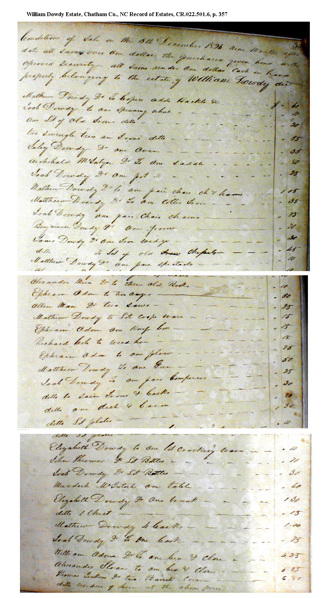
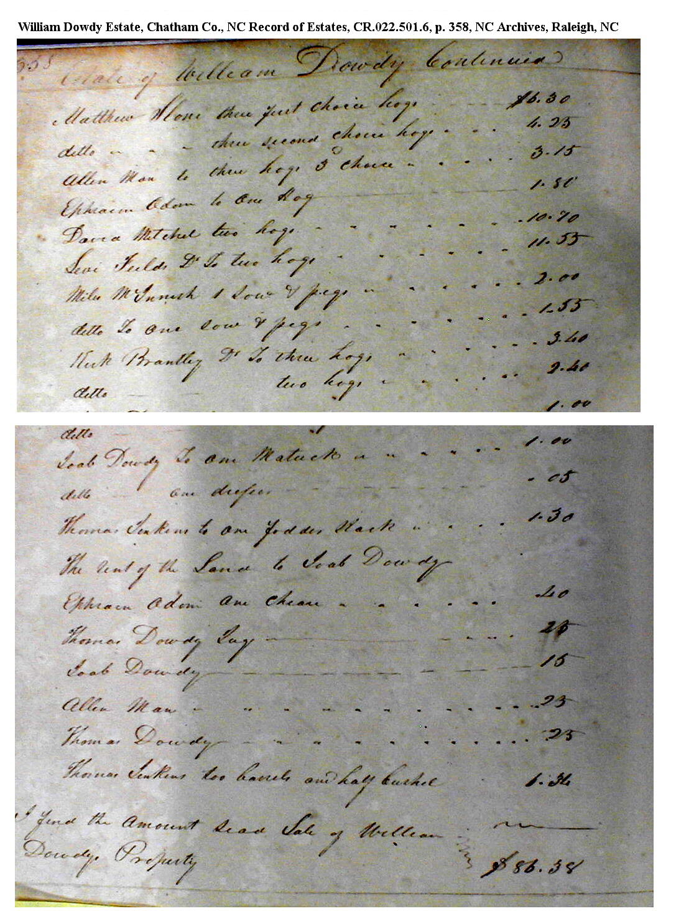
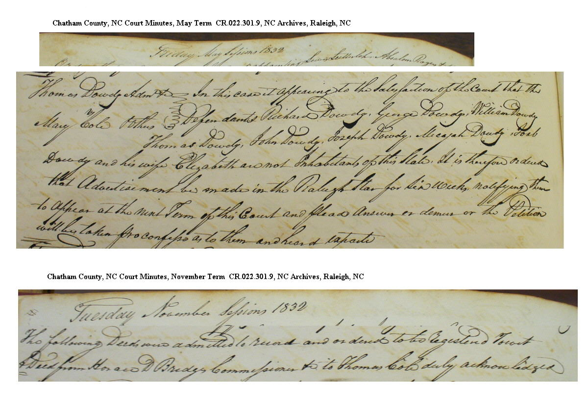
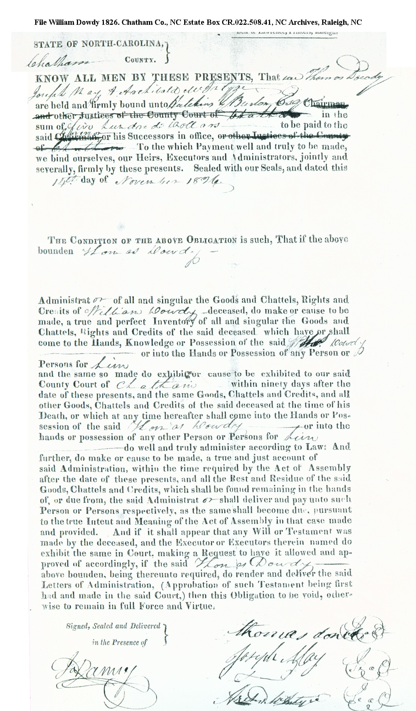
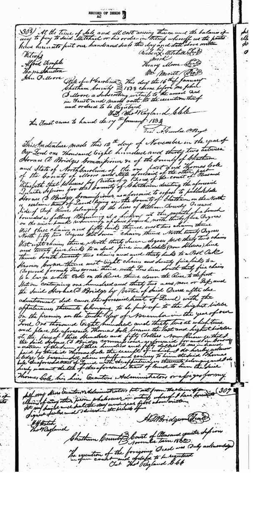

|
William Dowdy Sr.
of Deep River, died 1826
Age
William Dowdy born before 1755 (age
+45 in 1800 Chatham census)
William Dowdy Sr born before 1765 (age
+45 in 1810 Chatham census)
William Dowdy Sr of Deep River born before
1765 (above age 50 and exempt from paying tax in 1815 tax
list. Or possibly disabled?)
Relationship with Thomas Dowdy [d1815]
William Dowdy and Thomas Dowdy [d 1815]
lived next to each other on Deep River and are about the same
age. Thomas Sr. died in 1815 and William died in 1826. Thomas
Dowdy Jr. [d.1859] was the executor of both the estates. [Signatures
of Will of Thomas Sr, and on adminstrator bonds 1815 and 1826.]
They could be brothers or father and son. The records do not
state a relationship.
Thomas Dowdy [d.1859] was made the administrator
of the estate of William Dowdy, deceased on 14 November 1826.
Joseph May and Archibald McIntryre were the securities for a
$500 bond. On Tuesday of the 1826 November Court Term of Chatham
County Court of Pleas & Quarter Session Thomas Dowdy was
recorded as the administrator of the estate of William Dowdy,
deceased. The court ordered him to sell the perishable part of
the estate.
Estate Sale of William Dowdy Sr 1826
The estate “Sail” of William
Dowdy deceased was held on 5 December 1826. Items under $1 were
paid in cash and other items were by bond paid in nine months.
Thomas Dowdy, administrator reported , “ I find the amount
said Sale of William Dowdy Property $86.38.4 Sally and Elizabeth
Dowdy were the only females at the sale. Dowdy males included
Thomas, Joab, Mathew, James, Benjamin. Others: Richard Cole,
Ephraim Odom, Allen Marr, Kirk Brantly, David Mitchel, Levi fields,
Miles McInnish, Matthew Stone Thomas Jenkins, Murdoc McIntosh,
Archibald McIntyre
|
Farm Items:
Coper adds Hackle &
Saddle
Lot of old Irons
2 Swingle true on Irons?
One pare chais ch & hamer
one colter Iron
pair chair chains
2 plows
iron wedge
lot of chissels
2 auger
2 saws
weeding hoe
plow
gun
pair compersas
saw irons & casks
casks
2 barrels of corn & residue of corn
fodder stack
matuck
2 barrels & half bushel
About 20 hogs
2 sows with pigs |
Household items:
Spinning Wheel
Pot
Spectacles
lot of old books
lot of cookware
knife
dish & bason
lot of plates
lot of crockery ware
2 lots bottles
table
trunk
chest
2 beds and close
chair
jug |
There are no "female" items included
in the sale. The land was rented to Joab Dowdy. The name
Richard Cole could be the husband of Mary Cole who is later mentioned
in a court case of the heirs.


Chatham Co Court Records
1832 May Term Court
A court case of Thomas Dowdy, Administrator
vs. Mary Cole and others was recorded during the May 1832 Court
Term. “In this case appearing to the Satisfaction of the
Court that the Defendant Richard Dowdy, George Dowdy, William
Dowdy, Thomas Dowdy, John Dowdy, Joseph Dowdy, Micajah Dowdy,
Joab Dowdy and his wife Elizabeth are not Inhabitants of this
State. It is therefore ordered that Advertisement be made
in the Raleigh Star for six weeks notifying them to appear at
the next Term of this Court and plead answers as demise or the
Petition will be taken for a confess as to them and heard exparte.

1832 November Court Term (see above)
Tuesday November 1832 Court Term “The
following Deed was admitted to record and ordered to be registered
to wit: A deed Horace D. Bridges Commissioner & Thomas Cole
duly acknowledged."
A deed was recorded on 12 November 1832
Horace L. Bridges, commissioner of Chatham County to Thomas Cole
of Moore County, NC. The land was the land William Dowdy, deceased
and located on the Deep River. 132 acres
1826 Administration Bond granted to
Thomas Dowdy [d 1859]

Chatham Deed Records: Land Identified
as being owned by William Dowdy Sr of Deep River (died 1826)
|
Deed Book B p. 406-407
80 acres formerly land of “Herman
Husbands” |
15 November 1780 John Birdsong Sheriff
to John Montgomery
North side of Deep River Beg. At a Mulberry
Tree at the said River Corner of Jesse Hollingsworth then runing
East along the said Hollingsworth line to a Hickory and Dogwood
in William Dowdeys line then South or thereabouts along
the dividing line between Joseph Pinson and William Dowdy
to a White Oak, Red Oak and Ash on the River Bank then up the
River the various Courses to the first station estimated 80 acres
John Montgomery |
|
Deed Book DP p. 418
110 acres |
1 January 1788 John Montgomery & wife
to Joseph Lea Beg.
At Mulberry at the said River corner of
Jesse Hollinsworth runing East along the said Hollinsworth line
to a Hickory and Dogwood in William Dowdy's line then
South or therabouts along the dividing line between William
Dowdy and Joseph Pinson to a white oak Red Oak and Ash on
the River Bank thence up the River the various courses 110 acres
of land Land conveyed to John Montgomery by John Birdsong sold
15 November 1780 .. Deed Book B p. 406-407 |
|
Deed Book X p. 331-332
1st Land purchased from Pinson 1763
2nd Grant 84 acres |
Heirs of Thomas Dowdy to James Taylor
1821 2 tracts on the North side of Deep
River adjoining each other.
1st beginning on the River bank at the
mouth of a branch William Dowdy's lower Corner then North
or therabouts along the dividing line to a pine in the back line
then East to two pines the lower Corner then South to a hickory
on the river bank up the various courses of the river to the
beginning. 50 acres
2nd Begins at a black [ ] One of said James
Taylors present corner then East 166 poles with Taylors line
to a Red oak then South 81 poles to a stake then West 166 poles
to a stake then direct to the beginning– 84 acres. [see
land grant next which confirms the source of this property]
Thomas Dowdy SR Land Grant File 1891
Grant 496
84 acres - Warrant On the waters of
Deep River on the North side the suplus in his old survey beginning
at a black Jack his own and James Taylors corner running with
said James Taylors line East round the compliment. Survey 1 August
1808 Beg. At a Black Jack James Taylors corner then running East
166 poles with Taylors line to a red oak then South 81 poles
to a stake then West 166 poles to the beginning. [Plat does not
agree with survey which appears to be drawn backwards] |
|
Deed Book AC p. 308-309
132 acres
(see deed image below) |
10 November 1832 Land belonging to the
heirs of William Dowdy
Lands sold at public auction to highest
bidder Thomas Cole for $350 -North side of of Deep river beginning
at the mouth of a branch on the river bank runing up said branch
N 35 W 3 chains 50 links then West 2 chains thence N 52 W 7 chains
then N 20 W 8 chains then N 307 W 32 chains 20 links to a dead
pine in Waddells [now Harrises] line then S 22 chains 30 links
to a Post Oak Harris Corner then W 8 chains 75 links to a Dogwood
formally Leas corner then up Leas line S 35 chains to a White
Oak on the River then down the River to the first station 132
acres (This land was sold by Thomas Cole to Brooks Harris
in 1849) |

Lineage Analysis and Speculation
There seem to be several pre-1800 William Dowdys in Chatham
Co. Some are identified as follows (although they may be one
in the same person?)
1. William Dowdy who appears in road orders in as early as
1763 in the Deep River area (southern Chatham)
2. William Dowdy who is killed by Tories in 1782, the same person
granted land in Rocky River in 1785
3. William Dowdy who post-1800s is known as William "Sr."
in the Deep River area
The following is a theory based on the following census analysis:
Census
Household |
1790 HH
Birth Date |
1800 HH pg 171
Birth Date |
1810 HH pg 189?
Birth Date |
Birth Date
Estimate
*Assumes 2 years apart |
Children
Named in 1832 Estate Document
(document order) |
William Dowdy
---
1. male
2. male
3. male
4. male
5. male
6. male
7. male |
b. bef 1774
---
b. bef 1774
b. bef 1774
b. 1774-1790
b. 1774-1790
b. 1774-1790
b. 1774-1790
b. 1774-1790 |
b. bef 1755
---
gone
gone
gone
gone
b. 1784-1790
b. 1784-1790
b. 1784-1790 |
b. bef 1765
---
gone
gone
gone
gone
gone
gone
b. 1784-1794 |
b. 1748
---
b. 1770
b. 1772
b. 1776
b. 1778
b. 1784
b. 1786
b. 1788 |
William Dowdy
1. Richard b bef 1774 (in 1790 cen.)
2. George K. of Hickman KY b 1772
3. William of Wm'son TN b 1770-80
4. Thomas (maybe of Perry TN)
5. John of Wm'son TN b abt 1780
6. Joseph of Graves KY b abt 1784
7. Micajah of Graves KY b abt 1780
8. Joab of Graves KY b abt 1780-90 |
Wife
1. female
2. female
3. female |
N/A
N/A
N/A
N/A |
b. bef 1755
gone
gone
b. 1774-1784 |
gone (dead?)
gone
gone
b. 1765-1784 |
b. 1750
b. 1774
b. 1780
b. 1782 |
Unknown name
1. Mary b1770-80 m. [Thos.?] Cole
2. Unknown name
3. Unknown name |
The list of children in the 1832 estate document fit the census
profile for William Dowdy Sr perfectly. Eldest son Richard Dowdy
(in rank order in the 1832 document) is enumerated outside William's
household in Chatham Co in 1790. He is untraced after 1792 but
is clearly alive (outside NC) in 1832.The other 7 male children
are living with their father in 1790. Four more male children
are living outside the family in 1800. George is found in 1800
Chatham census, but the others including Richard are not identified.
They appear in very early TN tax lists. Joseph Dowdy is found
in an 1806 church record across the boarder from Williamson TN
in Dickson Co TN.William, Micajah, and Thomas are found in 1810
Williamson Co TN taxes. John, Joseph, Micajah and William are
found in 1820 Williamson Co TN census. Thomas Dowdy is granted
land in nearby Perry Co TN in 1820.
William Dowdy (Sr.?) of Deep River Profile
Theory Conclusions
Born approx 1748 (or slightly earlier)
Married approx 1769 (age 21)
Died 1826
Note: the earliest date that "Road Order" William
Dowdy of Deep River shows up in records is 1763. IF William Dowdy
(Sr?) of Deep River was born as early as 1747 instead of 1748
(-ish), and IF, "Road Order" William Dowdy of Deep
River was barely 'of age' in the 1763 record (i.e age 16), then
the two could be the same person???
What are YOUR thoughts on this theory? |

 Chatham County
Chatham County